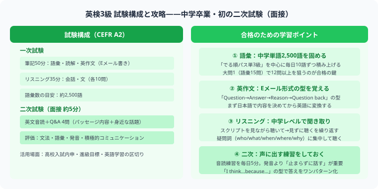

英検3級は中学卒業程度の英語力を証明する資格で、年間約130万人が受験する英検の中で最も受験者数が多い級です。一次試験（筆記・リスニング）と二次試験（個人面接）の2段階構成で、合格率は約50%。正しい勉強法で取り組めば中学生・高校生でも十分に合格を狙えます。

英検3級は中学卒業程度のCEFR A2レベルで、英検で初めて二次試験（面接）が課されるレベルです。Eメール形式の英作文と音読面接が新たに加わる大きなステップアップ試験です。
| 項目 | 内容 |
|---|---|
| 対象レベル | 中学卒業程度の英語力 |
| 試験回数 | 年3回（6月・10月・1月） |
| 一次試験内容 | 筆記（50分）＋リスニング（約25分） |
| 二次試験内容 | 個人面接（約5分） |
| 合格率 | 約50%（一次試験） |
| 年間受験者数 | 約130万人（英検の中で最多） |
英検3級の合格は高校入試での優遇措置に利用できるほか、就職活動や英語力の客観的な証明としても活用できます。推薦入試・内申点に加点される高校も多く、中学生にとって最初に目指す英語資格として広く認知されています。
英検3級に合格するために必要な勉強時間は、現在の英語力によって異なります。英検4級取得済みであれば50〜100時間が目安。英語をゼロから始める場合は150〜200時間程度見ておくとよいでしょう。1日30分の学習でも3〜6ヶ月あれば十分な準備が可能です。
| 現在のレベル | 目安の勉強時間 | 1日30分の場合 |
|---|---|---|
| 英検4級取得済み | 50〜100時間 | 約3〜6ヶ月 |
| 中学英語の基礎あり | 80〜120時間 | 約5〜8ヶ月 |
| 英語ゼロから | 150〜200時間 | 約10〜13ヶ月 |
英検3級の一次試験は筆記50分＋リスニング約25分の構成です。各パートの特徴と攻略ポイントを押さえて効率よく対策しましょう。
英検3級の筆記試験の中で最初に解く問題が語彙・文法の短文穴埋め15問です。頻出の名詞・動詞・形容詞を中心に、中学3年間で学ぶ文法事項を幅広く確認する必要があります。特に関係代名詞（who / which / that）・間接疑問文（I know what you mean.）・不定詞・動名詞は毎回出題される頻出項目です。
長文読解は掲示・Eメール（手紙）・説明文の3種類が出題されます。全体の文章量は英検2級より少なく、中学英語の範囲内の語彙で書かれているため、単語力が身についていれば比較的スムーズに解けます。
長文は「先に選択肢を読んでから本文を読む」先読み法が有効です。何を問われているかを意識しながら読むことで、余計な部分に時間をかけずに済みます。知らない単語が出てきても、前後の文脈から意味を推測する習慣をつけましょう。
英検3級の英作文は25語程度の英文を書く問題です。与えられた質問に対して自分の意見とその理由を書きます。難しく考えず、シンプルなテンプレートを使って答えましょう。
リスニングは3つのパートで構成されており、約25分間で30問を解きます。音声は2回読まれるため、1回目で全体を把握し、2回目で答えを確認するという流れが効果的です。
| パート | 内容 | 問題数 | 攻略ポイント |
|---|---|---|---|
| 第1部 | 会話の返答選択（イラスト付き） | 10問 | 状況を示すイラストを先に確認してから音声を聞く |
| 第2部 | 会話の内容理解（選択肢は問題用紙に記載） | 10問 | 誰が・何を・いつ、というキーワードに集中する |
| 第3部 | 短い説明文の内容理解 | 10問 | 数字・場所・人物の特徴など具体的な情報を聞き取る |
リスニング力を高めるには、シャドーイングが最も効果的です。英検3級レベルの音声を聞きながら、少し遅れて同じように声に出して言う練習を毎日15分続けると、3ヶ月で聞き取りやすさが大きく変わります。公式サイトの過去問音声を活用しましょう。
英検3級の二次試験は個人面接（約5分）です。面接官1名と受験者1名の形式で、英語でのやりとりを行います。試験内容は大きく4つのパートに分かれます。
| 試験の流れ | 内容 | 攻略ポイント |
|---|---|---|
| パッセージの音読 | 約50語のパッセージを30秒で音読する | 流暢さを意識。詰まっても止まらず読み続ける |
| パッセージに関する質問 | 音読した文章の内容について質問される | パッセージの文をそのまま使って答えるのが最も安全 |
| 4コマ漫画の説明 | 4コマ漫画を見て登場人物の行動を説明する | 「He is ...ing.」「She wants to ...」など2〜3文でOK |
| 質問への回答（2問） | イラストや日常に関連した意見を問われる | Yes/Noの後に理由を1文追加するだけで十分 |
試験本番の3ヶ月前から計画的に学習を進めることで、無理なく合格レベルに到達できます。以下のスケジュールを参考にしてください。
| 時期 | 学習内容 | 1日の目安 |
|---|---|---|
| 1ヶ月目 | 単語50語/週（でる順パス単3級を1周）、文法基礎（中学文法の総復習） | 30〜45分 |
| 2ヶ月目 | 長文読解・リスニング開始、過去問1回分を解いて弱点確認 | 45〜60分 |
| 3ヶ月目 | 過去問3〜5回分演習、面接練習（オンライン英会話活用）、弱点の最終補強 | 60〜90分 |
英検3級に合格したら、次は準2級（高校中級レベル）を目指しましょう。準2級は高校2年生程度の英語力が求められ、3級から大きなレベルアップになりますが、3級で身につけた基礎があれば着実に合格を狙えます。
| 級 | レベル目安 | 3級からの追加勉強時間 |
|---|---|---|
| 英検3級 | 中学卒業程度 | ― |
| 英検準2級 | 高校中級程度 | 100〜150時間 |
| 英検2級 | 高校卒業程度 | 準2級から150〜200時間 |
| 英検準1級 | 大学中級程度 | 2級から200〜300時間 |
「英検3級 → 準2級 → 2級 → 準1級」というロードマップで1〜2年かけてステップアップするのが王道です。大学入試や就職活動に英検を活用するなら2級以上を目指すことが推奨されます。